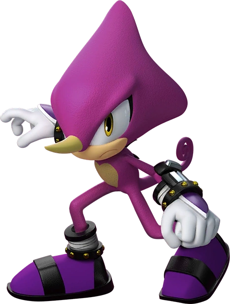

Aparência
Espio é um camaleão antropomórfico com características animais e humanas, ele possui a pele vinho, usa luvas com pulseiras roxas e tênis roxos com faixas pretas.Ele possui uma cauda que está sempre enrolada, olhos amarelos e um chifre amarelo no topo da cabeça, e uma marca pêssego com formato de coração em seu peito
Personalidade
Espio é bem sério e reservado, ele não é muito comunicativo e só fala quando é extremamente necessário, sendo bem calado e focado em todos os momentos. O camaleão é muito habilidoso e não gosta tanto assim de dividir espaço com os outros, está sempre treinando para se tornar melhor cada vez mais em seus estilos de luta. Além disso, ele segue a personalidade fria e madura de um ninja.
